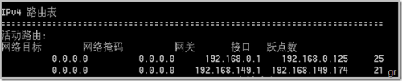
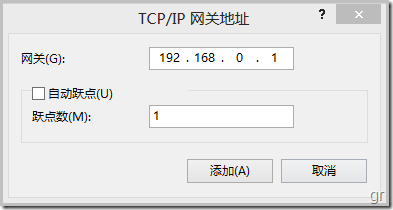
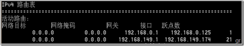
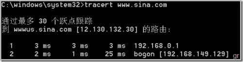
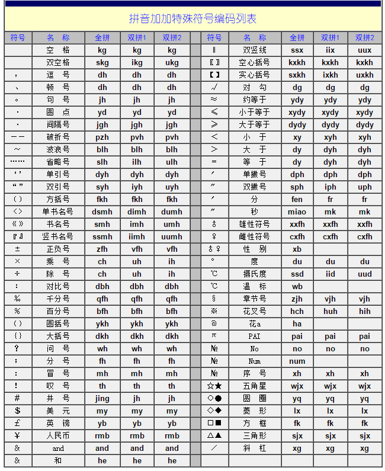
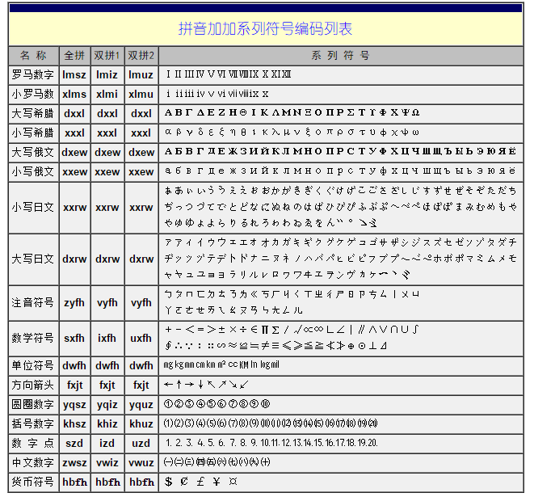

windows操作系统技巧合集
Sat, Oct 17, 2015Windows7安全模式下可以用MSI卸载软件
把下面这个语句写入到一个批处理中,在安全模式下用管理员权限导入到注册表中,就可以在安全模式下卸载软件了.
reg add HKLM\SYSTEM\CurrentControlSet\Control\SafeBoot\Minimal\MSIServer /VE /T REG_SZ /F /D "Service"
Windows10 设置默认输入法
我是从Win7中文版本升级到Win10的，默认只有中文输入法，每次打开浏览器，代码编辑 器输入代码的时候总是默认输入中文，感觉这个体验非常不好，想配置成默认输入英文的 ，当我想输入中文的时候再手动切换到中文输入法。
- 进入WIN10系统在桌面右角处点语言图标，在弹出来的菜单中选择语言首选项。
- 点击”添加语言”按钮进入添加语言界面找到英语后打开,然后选择美语英语。
- 添加后可以按WINI+Space验证是否能切换输入法.
- 在电脑的右下角处点击输入法。然后再点语言首选项。
- 更改语言首选项处，把英文语言上移到第一位就可以了。
- 英文的输入法移动到第一位后就是默认输入法法了,当前的许多第三方输入不过也支持英文输入,不过不太方便使用,需要按SHIFT键进行切换。
在Win10下，按WIN + Space可以调出输入法切换菜单，在所有安装的输入法间切换。 切换为中文后，按Ctrl+Shift可以同类输入法间切换，在微软拼音输入法下，按 Ctrl+Space 则可以在中文与英文输入间切换，其他输入法下则不行。
添加右键使用Windows Defender扫描文件或文件夹
添加
Windows Registry Editor Version 5.00
; Created by: winaero
; http://winaero.com
; Folder Scan
[HKEY_CLASSES_ROOT\Folder\shell\WindowsDefender]
"Icon"="%ProgramFiles%\\\\Windows Defender\\\\EppManifest.dll"
"MUIVerb"="使用Windows Defender扫描"
[HKEY_CLASSES_ROOT\Folder\shell\WindowsDefender\Command]
@="cmd.exe /s /c \"\"C:\\Program Files\\Windows Defender\\MpCmdRun.exe\" -scan -scantype 3 -SignatureUpdate -file \"%1 \"\" & pause"
; File Scan
[HKEY_CLASSES_ROOT\*\shell\WindowsDefender]
"Icon"="%ProgramFiles%\\\\Windows Defender\\\\EppManifest.dll"
"MUIVerb"="使用Windows Defender扫描"
[HKEY_CLASSES_ROOT\*\shell\WindowsDefender\Command]
@="cmd.exe /s /c \"\"C:\\Program Files\\Windows Defender\\MpCmdRun.exe\" -scan -scantype 3 -SignatureUpdate -file \"%1 \"\" & pause"
移除
Windows Registry Editor Version 5.00
; Created by: winaero
; http://winaero.com
; Folder Scan
[-HKEY_CLASSES_ROOT\Folder\shell\WindowsDefender]
; File Scan
[-HKEY_CLASSES_ROOT\*\shell\WindowsDefender]
SecureCRT 抓Log的前置字符串配置
%M-%D %h:%m:%s:%t
无线有线同时上网自由选择连接线路
转自卡饭论坛 无线有线同时上网自由选择连接线路
解决问题
首先查看路由表, 看到有两条默认路由，192.168.149.1是有线的，192.168.0.1是无线的：用命令
route print, 可以看出最后两个路由的跃点数是不一样的，有线的是21，无线的是25，而电脑会首先选择从跃点小的线路走。
问题很明确了，下面只需修改无线的跃点数，使它小于无线的跃点数，进入网络中心，选择无线网络->属性->ipv4->属性->高级->添加，填入网关，跃点数设为1： 
重新查看路由表，可以看到无线网络的跃点数已经修改为1，如下图： 
跟踪一下路由，看究竟走的是哪个线路，可以看出，走的是192.168.0.1，即无线网络：用命令
tracert, 最后在有线无线共存的情况下，可以顺利通过无线上网。
实际在操作的过程中不需要添加网关那一步，只需要在“高级”对话框中，把自动跃点数 的选项去掉，然后添加一个最小的跃点数1,最后确定退出，再查看路由，如果还是走有 线的话，把无线断开再重新连接一次即可。
拼音加加输入法输入特殊符号的方法
1.点击拼音加加输入法工具条,左击和右击都可以,在弹出的菜单中,选择”词库及自定义管理…“,打开”加加 词库及自定义管理”对话框,选择”自定义编码词库”选项卡,点击最下方的”编辑自定义编码词库…“的按钮,会打开一个文本文件”userword.txt”.
2.在这个文件的末尾追加下面的内容,然后保存退出,关闭对话框后,回到输入法中,就可以快捷的输入这些符号了,下面的内容来源于网络,方便快速的输入一些特殊符号
zyfh=ㄅㄆㄇㄈㄉㄊㄋㄌㄍㄎㄏㄐㄑㄒㄓㄔㄕㄖㄗㄘㄙㄧㄨㄩㄚㄛㄜㄝㄞ
ㄟㄠㄡㄢㄣㄤㄥㄦ（注音符号）
sxfh=＋－＜＝＞±×÷∈∏∑∕√∝∞∟∠∣‖∧∨∩∪∫∮∴∵∶∷∽≈≌≈≠≡≤≥≤≥≮≯⊕⊙⊥⊿ (数学符号）
dxxl=ΑΒΓΔΕΖΗΘΙΚΛΜΝΞΟΠΡΣΤΥΦΧΨΩ（大写希腊）
xxxl=αβγδεζηθικλμνξοπρστυφχψω（小写希腊）
dxew=АБВГДЕЖЗИЙКЛМНОПРСТУФХЦЧШЩЪЫЬЭЮ
ЯЁ（大写俄文）
xxew=абвгдежзийклмнопрстуфхцчшщъыьэю
яё（小写俄文）
dwfh=㎎㎏㎜㎝㎞㎡㏄㏎㏑㏒㏕（单位符号）
dxlm=ⅠⅡⅢⅣⅤⅥⅦⅧⅨⅩⅪⅫ（大写罗马）
xxlm=ⅰⅱⅲⅳⅴⅵⅶⅷⅸⅹ（小写罗马）
fxjt=←↑→↓↖↗↘↙（方向箭头）
yqsz=①②③④⑤⑥⑦⑧⑨⑩（圆圈数字）
khsz=⑴⑵⑶⑷⑸⑹⑺⑻⑼⑽⑾⑿⒀⒁⒂⒃⒄⒅⒆⒇（括号数字）
szd=⒈⒉⒊⒋⒌⒍⒎⒏⒐⒑⒒⒓⒔⒕⒖⒗⒘⒙⒚⒛（数字点）
zwsz=一二三四五六七八九十（中文数字）
xxrw=ぁあぃいぅうぇえぉおかがきぎくぐけげこごさざしじすずせぜそぞただちぢっつづてでとどなにぬねのはばひびぴふぶぷへべぺほぼぽまみむめもゃやゅゆょよらりるれろゎわゐゑをん゛゜ゝゞ（小写日文）
dxrw=ァアィイゥウェエォオカガキギクグケゲコゴサザシジスズセゼソゾタダチヂッツヅテデトドナニヌネノハバパヒビピフブプヘベペホボポマミムメモャヤュユョヨラリルレロヮワヰヱヲンヴヵヶーヽヾ（大写日文）
hbfh=＄￠￡￥¤（货币符号）
空格：kg= ，双空格：skg= ，逗号：dh=，顿号：dh=、句号：jh=。
圆点：yd=·，间隔号：jgh=·，破折号：pzh=——，波浪号：blh=～
省略号：slh=……，单引号：dyh=‘，单引号：dyh=’，双引号：syh=“
双引号：syh=”，方括号：fkh=〔，方括号：fkh=〕，单书名号：dsmh=〈
单书名号：dsmh=〉，书名号：smh=《，书名号：smh=》，正负号：zfh=±
乘号：ch=×，除号：ch=÷，对比号：dbh=∶，五角星：wjx=☆
五角星：wjx=★，双竖线：ssx=‖，竖书名号：ssmh=『，竖书名号：ssmh=』
空心括号：kxkh=〖，空心括号：kxkh=〗，实心括号：sxkh=【
实心括号：sxkh=】，对勾：dg=√，约等于：ydy=≈，小于等于：xydy=≤
大于等于：dydy=≥，雄性符号：xxfh=♂，性别：xb=♂，雌性符号：cxfh=♀
性别：xb=♀，度：du=°，单撇号：dph=′，分：fen=′，双撇号：sph=″
秒：miao=″，摄氏度：ssd=℃，温度：wb=℃，美元：my=＄，英镑：yb=￡
千分号：qfh=‰，章节号：zjh=§，花叉号：hch=※，花a：ha=＠
左箭头：zjt=←，右箭头：yjt=→，上箭头：sjt=↑，下箭头：xjt=↓
叹号：th=！，井号：jing=＃，人民币：rmb=￥，百分号：bfh=％
and：and=＆，和：he=＆，圆括号：ykh=（，圆括号：ykh=），加号：jh=＋
减号：jh=－，斜杠：xg=／，冒号：mh=：，分号：fh=；，小于：xy=＜
大于：dy=＞，等于：dy=＝，问号：wh=？，大括号：dkh=｛
大括号：dkh=｝，PAI：pai=π，No：no=№，Num：num=№，序号：xh=№
圆圈：yq=○，圆圈：yq=●，菱形：lx=◇，菱形：lx=◆
方形：fk=□，方形：fk=■，三角形：sjx=△，三角形：sjx=▲
3.我常用的组合
;（方向箭头）
jtz=←
jts=↑
jty=→
jtx=↓
jtzs=↖
jtys=↗
jtyx=↘
jtzx=↙
;（圆圈数字）
yqszy=①
yqsze=②
yqszs=③
yqszs=④
yqszw=⑤
yqszl=⑥
yqszq=⑦
yqszb=⑧
yqszj=⑨
yqszs=⑩
;（数字点）
szdy=⒈
szde=⒉
szds=⒊
szds=⒋
szdw=⒌
szdl=⒍
szdq=⒎
szdb=⒏
szdj=⒐
szds=⒑
szdsy=⒒
szdse=⒓
szdss=⒔
szdss=⒕
szdsw=⒖
szdsl=⒗
szdsq=⒘
szdsb=⒙
szds9=⒚
szdes=⒛
;括号数字
khszy=⑴
khsze=⑵
khszs=⑶
khszs=⑷
khszw=⑸
khszl=⑹
khszq=⑺
khszb=⑻
khszj=⑼
khszs=⑽
khszsy=⑾
khszse=⑿
khszss=⒀
khszss=⒁
khszsw=⒂
khszsl=⒃
khszsq=⒄
khszsb=⒅
khszsj=⒆
khszes=⒇
;省略号：
slh=……
;单引号：
dyh=‘
;单引号：
dyh=’
;双引号：
syh=“
;双引号：
syh=”
;方括号：
fkh=〔
;方括号：
fkh=〕
;单书名号：
dsmh=〈
;单书名号：
dsmh=〉
;书名号：
smh=《
;书名号：
smh=》
;正负号：
zfh=±
;乘号：
ch=×
;除号：
ch=÷
;对比号：
dbh=∶
;五角星：
wjx=☆
;五角星：
wjx=★
;双竖线：
ssx=‖
;竖书名号：
ssmh=『
;竖书名号：
ssmh=』
;空心括号：
kxkh=〖
;空心括号：
kxkh=〗
;实心括号：
sxkh=【
;实心括号：
sxkh=】
;对勾：
dg=√
;约等于：
ydy=≈
;小于等于：
xydy=≤
;大于等于：
dydy=≥
;雄性符号：
xxfh=♂
;性别：
xb=♂
;雌性符号：
cxfh=♀
;性别：
xb=♀
;度：
du=°
;单撇号：
dph=′
;分：
fen=′
;双撇号：
sph=″
;秒：
miao=″
;摄氏度：
ssd=℃
;温度：
wd=℃
;美元：
my=＄
;英镑：
yb=￡
;千分号：
qfh=‰
;章节号：
zjh=§
;花叉号：
hch=※
;花a：
ha=＠
;叹号：
th=！
;井号：
jing=＃
;人民币：
rmb=￥
;百分号：
bfh=％
;and：
and=＆
;和：
he=＆
;圆括号：
ykh=（
;圆括号：
ykh=）
;加号：
jh=＋
;减号：
jh=－
;斜杠：
xg=／
;冒号：
mh=：
;分号：
fh=；
;小于：
xy=＜
;大于：
dy=＞
;等于：
dy=＝
;问号：
wh=？
;大括号：
dkh=｛
;大括号：
dkh=｝
;PAI：
pai=π
;No：
no=№
;Num：
num=№
;序号：
xh=№
;圆圈：
yq=○
;圆圈：
yq=●
;菱形：
lx=◇
;菱形：
lx=◆
;方形：
fk=□
;方形：
fk=■
;三角形：
sjx=△
;三角形：
sjx=▲
4.拼音加加编码符号表
http://lijie.cai.swufe.edu.cn/pyjj/pyjjfhlb.HTM

